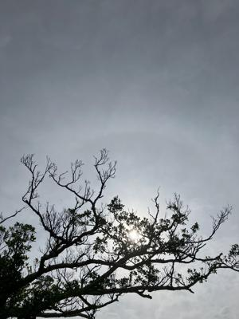
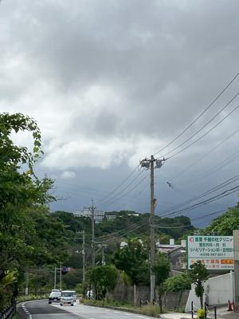

うるがいの話 ある日
最新: 前線を気にする【うるがいの話 ある日】とは 一日だけのプログです
『うるがいの話』の最新一日だけのプログで、通信料が少なく経済的だ。カニの画像をクリックすると全ての日付が載る『うるがいの話』サイトを表示します
|
|
【うるがいの話】 うるがい(ｳﾙｶﾞｲ urugai)とは、『もずくがに』の名前でとても大きくなります。 |
|---|---|
|
|
【カミマヤーの話】 猫のことを方言でマヤーといいます。カミマヤー（kamimayaa）とは、神の猫のことです。 |
|
【たながぁの音楽】 たながぁ（ﾀﾅｶﾞｰ tanagaa）とは手長えびのことで、何種類かあり大きいのは車 エビぐらいになります。 |

|
【ぶながぁの話】 ぶながぁ(ﾌﾞﾅｶﾞｰ bunagaa)とは、赤い髪の毛、赤い身体、そして身長は１ｍ２０ｃｍ ぐらい、川の蟹を食べているの目撃された。場所は沖縄県国頭郡大宜味村のと ある村僕の隣近所に住んでいる爺さんから、聞いた話です。 |
|
|
【ギーマの話】 ギーマ(giima)とは、山原の里山に咲くスズランに似た、 花を付けます。実は食べられます、 気が付くと口の周りが紫になっています。 |
2024年05月07日 (火）前線を気にする
15:32

昨日の夕方４時前、雨の前線が近づいて来た。恐らく大丈夫だろうと傘をも
たずジョギングへ出掛けた。金城ダムに近づくころには真っ黒雨雲が近づい
て来た。焦る、焦るが走るスピードは変わらず、遅い。早く走れないのであ
る。ジョギングを終え、風呂を出たあと雨が降った。

Ｔａｎａｇａａの動画に、１７番目チャンネル登録があったことがスマホに
上がる。『田中 マキ』、実名かな？、太鼓を交えた三線に挑戦しているが
いまいち、テンションが低い。難しい？、いやいやそうでもない、ただ倦怠
感が・・・・。

昨日、ヨメが体調悪いので明日のお義母さんの病院、変わりに付き添ってと
言わる。ん？、マ仕方ないけど。天気が良かったのか、病院へヨメが、付き
添った（良かった）。今日は、杖でなく歩行器を使う。そのうち、車イスに
なると思う。いやいや、つくづく会社辞めてヨカッタと思う。介護に付き合
いながら、あのタイト（大変）な仕事はあり得ない。
調子が悪いルーターは、昨夜また不具合が発生。今朝、調子のいい２階にあ
るエレコムに、電波が弱くなるが１階のパソコンやテレビなどを、ヤナーの
バッファロー経由のＬＡＮケーブルでから、ＷＩ－ＦＩ接続に繋ぎ変えた。
１５時５７分 ビットコインの総資産 ￥２８、４８６（↓１１３）